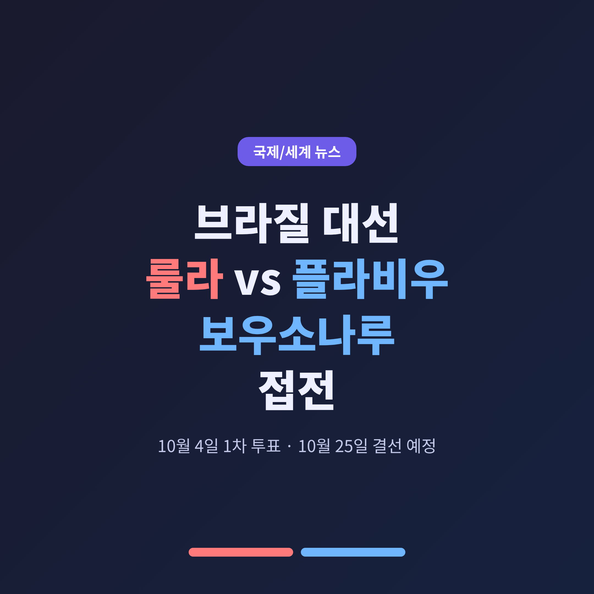
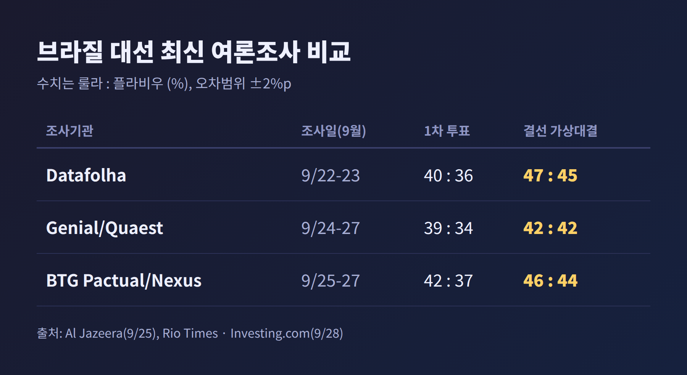
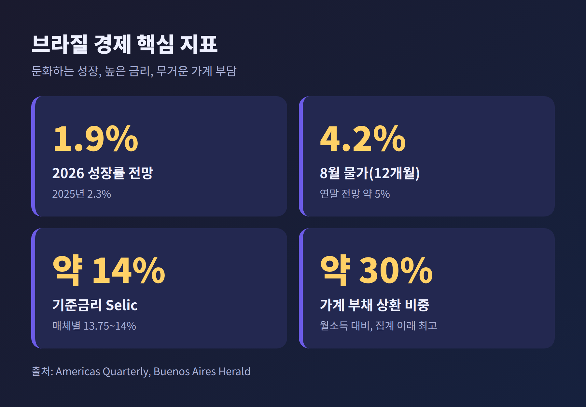
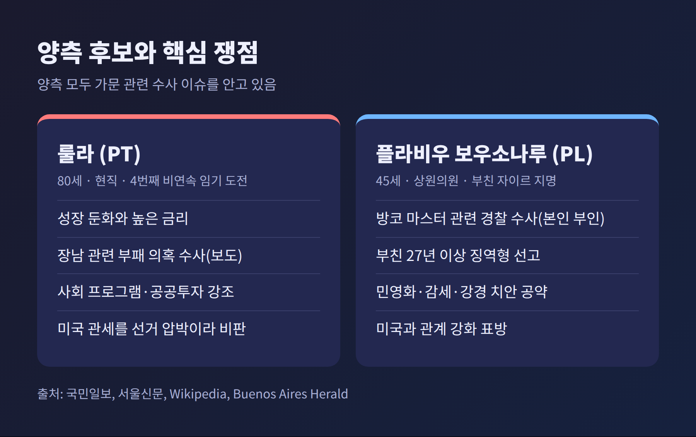
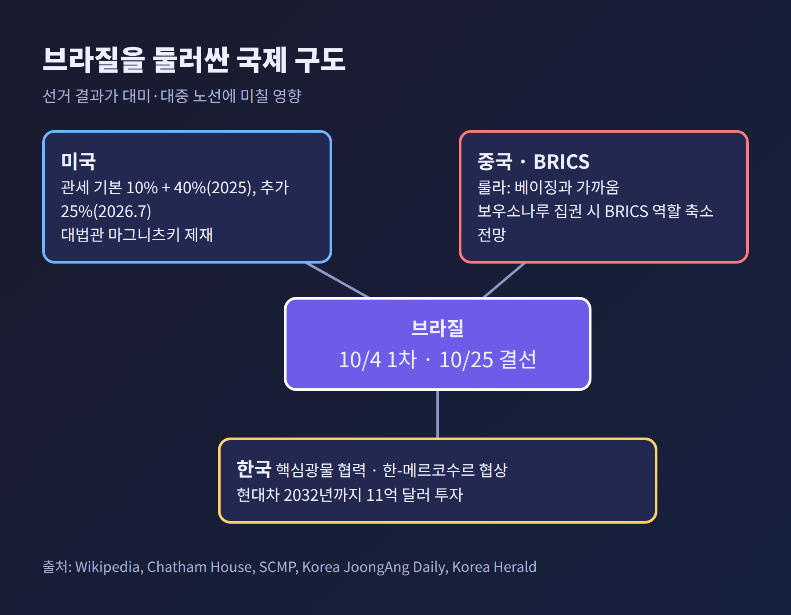

오늘은 10월 4일 투표를 앞둔 브라질 대통령선거를 정리해 보려 합니다. 핵심만 먼저 적습니다.
브라질 대선의 1차 투표일은 2026년 10월 4일입니다. 어느 후보도 유효표의 50%를 넘기지 못하면 10월 25일에 결선이 치러집니다. 유권자는 약 1억 5,900만 명이고, 같은 날 하원 513석 전체와 상원 81석 중 54석도 새로 뽑습니다.
가장 최근 조사들을 나란히 놓아 보겠습니다. 알자지라가 전한 Datafolha 조사(9월 22~23일, 2,002명, 오차범위 ±2%p)에서 결선 가상대결은 룰라 47%, 플라비우 45%였습니다. 9월 24~27일 Genial/Quaest 조사는 두 후보가 42%로 같았습니다. 9월 25~27일 BTG Pactual/Nexus 조사는 룰라 46%, 플라비우 44%였습니다.

흐름은 오락가락했습니다. 알자지라에 따르면 8월 5일 Quaest 조사에서 룰라는 44% 대 39%로 5%포인트 앞섰습니다. 그런데 9월 8일 공표된 BTG/Nexus 조사(9월 4~7일)에서는 플라비우가 46% 대 45%로 앞섰습니다. 국민일보가 블룸버그를 인용해 전한 대로, 룰라가 결선 가상대결에서 처음 뒤진 조사였습니다. 이후 Quaest는 9월 21일 공표에서 플라비우 42%, 룰라 41%였고, 이번 주에는 동률이 됐습니다.
1차 투표는 사정이 다릅니다. 세 조사 모두 룰라가 4~5%포인트 앞서지만 39~42% 수준입니다. 뒤를 아우구스투 쿠리, 호나우두 카이아두, 레난 산투스 등이 각각 3~5% 안팎으로 잇고 있습니다. 미주 한국일보는 이를 두고 지지층이 양강으로 모이는 전략투표 현상이라고 전했습니다.
이번 선거는 한 나라의 정권 교체 여부를 넘어섭니다. 브라질은 남미 최대 경제 규모를 가진 나라이고, BRICS와 G20 같은 다자 무대에서 이른바 글로벌 사우스의 목소리를 대변해 온 나라입니다.
채텀하우스는 이번 결과가 브라질의 다자주의 노선과 국제적 영향력을 좌우할 것이라고 짚었습니다. 보우소나루 진영이 이기면 트럼프 행정부와 가까운 정부가 남미에 하나 더 늘 수 있다는 분석도 함께 나왔습니다. 물론 이는 분석가의 전망이며, 실제 정책은 집권 뒤에 드러날 일입니다.
또 하나는 민주주의에 대한 신뢰입니다. 채텀하우스 조사에서 민주주의에 만족한다는 응답은 37%로, 2013년 66%에서 크게 떨어졌습니다. 두 후보 모두 거부감이 높습니다. 플라비우의 출마를 반대한다는 응답이 54%, 룰라의 재출마를 반대한다는 응답이 52%였습니다. 선거 공정성에 대한 신뢰도 갈립니다. 2022년 보우소나루 지지자의 45%, 룰라 지지자의 78%가 올해 선거가 자유롭게 치러질 것이라고 답했습니다.
룰라는 80세로, 2023년 1월부터 대통령직을 맡고 있습니다. 노동자당(PT) 소속이며 러닝메이트는 제랄두 아우키민입니다. 2022년에는 자이르 보우소나루를 1.8%포인트 차로 꺾었고, 이번에는 네 번째, 비연속 임기에 도전합니다. 사회 프로그램과 공공투자를 앞세웁니다.
플라비우는 45세로, 2019년부터 리우데자네이루주 상원의원을 지내고 있습니다. 자유당(PL) 소속이고, 러닝메이트는 아우프레두 가스파르입니다. 2025년 12월 5일 출마를 선언했고, 2026년 7월 당 후보로 공식 확정됐습니다. 민영화와 감세, 강경한 형사정책을 내세우며 형사책임 연령을 14세로 낮추자고 제안합니다.
배경에는 아버지 자이르 보우소나루 전 대통령이 있습니다. 그는 선거법원에서 권력 남용으로 피선거권이 박탈됐고, 2022~2023년 쿠데타 모의 혐의로 27년 이상의 징역형을 받았습니다. SCMP 등에 따르면 그는 건강 문제로 가택연금 상태이며, 플라비우는 아버지의 지명을 받았다고 밝혔습니다.
예전에는 룰라 정부의 성장이 강점으로 거론됐습니다. 지금은 둔화가 약점이 되고 있습니다. 아메리카스 쿼터리에 따르면 올해 성장률 전망은 1.9%로, 지난해 2.3%보다 낮습니다. 2분기 성장률은 전분기 대비 0.5%였고, 하반기는 0.1% 수준으로 예상됩니다.
물가는 8월 12개월 기준 4.2%로 내려왔지만, 기준금리 Selic은 14% 수준(다른 매체는 13.75%로 표기)입니다. 실업률은 역대 최저권이지만 일자리 증가세가 꺾였습니다. 상반기 정규직 일자리는 약 92만 개로, 전년 같은 기간 120만 개보다 적습니다. 가계 부채 상환액은 월소득의 약 30%로 집계 이래 최고 수준입니다.
여권은 최저임금 5배 이하 근로자의 소득세 면제 같은 분배 정책을 성과로 내세웁니다. 플라비우는 이에 맞서 감세와 민영화를 내세웁니다. 어느 쪽이 설득력을 얻는지가 결선의 향방을 가를 수 있습니다.

이번 선거에서는 치안이 경제를 제치고 유권자의 최대 관심사로 올라섰다는 평가가 있습니다. 위키피디아가 정리한 조사에서는 38%가 범죄를 가장 큰 문제로 꼽았습니다. 강경 대응을 앞세운 플라비우에게는 유리한 의제이고, 룰라 쪽은 사회정책으로 답하고 있습니다.
그러나 양측 모두 가문 이슈가 발목을 잡습니다.
플라비우는 방코 마스터 사건과 엮여 있습니다. 위키피디아에 따르면 지난 5월 보도로, 그가 아버지 관련 영화 「Dark Horse」 제작비로 약 1억 3,400만 헤알을 요청했고, 자금 일부가 파산한 방코 마스터의 전 소유주 다니엘 보르카루 쪽에서 왔다는 의혹이 불거졌습니다. 서울신문은 이 건으로 경찰 수사가 7월부터 진행 중이라고 전했습니다. 플라비우는 민간 영화의 후원을 구했을 뿐 공적 자금은 받지 않았다고 반박합니다. 야권은 정치적 공작이라는 입장입니다. 수사 결과가 나오지 않은 만큼, 혐의는 확정된 사실이 아닙니다.
룰라 진영도 자유롭지 않습니다. 국민일보에 따르면 룰라의 장남이 의료용 대마 프로그램과 관련한 부패·뇌물 의혹으로 수사를 받고 있습니다. 서울신문은 대법관 관련 스캔들도 부담으로 짚었습니다. 연금 사기 사건인 INSS 수사도 진영을 가리지 않고 선거전을 뒤흔든다고 위키피디아는 정리합니다.

미국과의 갈등은 선거 변수이면서 국제 사안입니다. 위키피디아의 정리에 따르면 트럼프 행정부는 2025년 4월 기본 10% 관세를 매겼고, 7월 30일 40%를 더해 총 50%로 올렸습니다. 쿠데타 재판을 맡은 알렉상드리 지 모라이스 대법관에게는 마그니츠키법 제재를 적용했습니다. 지난해 11월에는 커피와 소고기 등 일부 농산물이 추가 관세에서 빠졌고, 올해 7월 15일에는 미 무역대표부(USTR) 조사 결과를 근거로 25% 관세가 추가됐습니다.
룰라는 이 조치를 선거에 영향을 주려는 경제적 압박이라고 비판해 왔습니다. 미국 측은 관세를 보우소나루 재판과 연결 지어 왔습니다. 양측 주장이 엇갈리는 부분입니다. 관세가 선거에 어떤 영향을 줄지는 아직 단정하기 어렵습니다.
중국과의 관계도 갈립니다. 사우스차이나모닝포스트는 룰라를 '베이징과 가까운' 지도자로, 플라비우를 '친워싱턴' 후보로 소개했습니다. 플라비우는 중국식 공산주의에 반대하고 미국과의 관계를 강화하겠다는 입장입니다. 채텀하우스 조사에서는 좌파 성향 유권자의 57%가 중국을, 우파 성향의 58%가 미국을 선호한다고 답했습니다. 보우소나루 집권 시 BRICS 안에서 브라질의 역할이 줄 수 있다는 전망도 채텀하우스에서 나옵니다.

한국과 브라질의 접점도 적지 않습니다. 지난 7월 27일 이재명 대통령이 브라질리아를 국빈 방문해 룰라와 140분간 정상회담을 했습니다. 한국 대통령의 브라질 국빈 방문은 11년 만이었습니다. 항공우주, 에너지, 산업기술 등 양해각서 7건을 체결했고, 핵심광물 공급망 협력과 한-메르코수르 무역협정 협의 재개를 앞당기기로 했습니다. 코리아중앙데일리에 따르면 브라질은 반도체 등에 쓰이는 희토류 매장량이 세계 2위입니다.
기업으로는 현대차가 대표적입니다. 코리아헤럴드에 따르면 현대차는 2032년까지 브라질에 11억 달러를 투자하겠다고 발표했고, 2023년 브라질 승용차 판매 18만 5,014대로 점유율 약 10.7%, 4위 브랜드였습니다. 다만 두 나라 교역액은 이번 조사에서 확인하지 못했습니다.
누가 당선되든 협력의 큰 틀이 곧바로 바뀔 것이라고 단정하기는 어렵습니다. 다만 대미·대중 노선, 관세 협상, 무역협정 추진 속도는 새 정부의 선택에 따라 달라질 수 있습니다. 브라질에 투자한 기업이라면 결선 일정까지 지켜볼 만합니다.
전망은 세 갈래입니다.
첫째, 결선 진출은 사실상 유력합니다. 룰라가 1차에서 40% 안팎에 머물고 있어 과반 승리는 쉽지 않아 보입니다. 다만 조사와 실제 표심 사이의 오차는 늘 변수입니다.
둘째, 결선은 초접전이 될 전망입니다. 세 조사 기관 모두 오차범위 안입니다. 1차에서 3~5%를 얻는 쿠리, 카이아두, 산투스 지지층의 향방이 관건입니다. 국민일보가 전한 대로 한 번 뒤집혔던 판세는 다시 흔들릴 수 있습니다.
셋째, 재판과 수사 소식이 막판 변수입니다. 방코 마스터 수사와 룰라 장남 수사가 새 소식을 내놓으면 여론이 움직일 수 있습니다.
정리하면 이렇습니다. 이번 브라질 대선은 경제와 치안, 가문의 스캔들, 미국과 중국 사이의 선택이 한꺼번에 겹친 선거입니다.
"누가 이길지보다, 어떤 브라질이 세계와 마주할지가 남습니다."
10월 4일 밤의 개표 결과가 나오면, 그다음 3주가 승부의 진짜 시작일 수 있습니다.
이 글은 2026년 9월 29일 기준 공개된 언론 보도와 여론조사를 바탕으로 작성했으며, 조사 기관별 수치는 표본과 방식이 다릅니다.